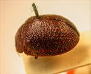
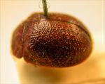
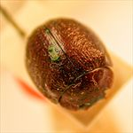
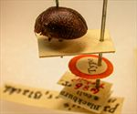
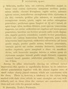

Click on images to enlarge
.jpg){kind=link}

Paropsis maculiceps type specimen, lateral view
.jpg){kind=link}

Paropsis maculiceps type specimen, lateral view
.jpg){kind=link}

Paropsis maculiceps type specimen, anterior view
.jpg){kind=link}

Paropsis maculiceps type specimen with labels
{kind=link}

Paropsis maculiceps, description
Name
Trachymela maculiceps (Blackburn, 1896)
Type specimen
Location: BMNH
Label data: “Type” (red-bordered circle), “6186 T. Yorke's P.”“Blackburn coll. 1910-236.”, “Paropsis maculiceps, Blackb.”
Female; HCE/BL ~ 20-21% (estimated from photo of lateral view).
Posterior trochanter is normal; this specimen is quite similar to Ta01 in overall appearance but without the dark patches on the elytra.
Original description
[Original description shown in figure, translated from Latin using ChatGPT, 04/2026]
♀. Somewhat ovate, moderately broad; fairly convex, of greater height (in lateral view), with the highest point placed opposite the middle of the elytral margin; rather less shiny; obscurely ferruginous; the front of the head, the antennae toward the apex, in some specimens the stripes of the elytra and (in these) the verrucae, the legs more or less, and in some specimens the sterna, pitchy. Head fairly closely and somewhat rugulosely punctulate. Pronotum broader than long as about 2⅔ to 1, from the apex long broadened beyond the middle, behind the apex transversely impressed, fairly closely somewhat strongly and fairly rugulosely (coarsely at the sides) punctulate; sides fairly strongly rounded, not at all flattened; posterior angles rounded. Scutellum lightly punctulate. Elytra not depressed below the humeral callus, behind the base not transversely impressed, somewhat strongly somewhat in rows (at the sides a little more, posteriorly a little less, strongly) punctulate; with small verrucae fairly closely arranged in rows; interspaces moderately rugulose; marginal part scarcely distinctly separated from the disc; the inner margin of the humeral callus slightly more distant from the suture than from the lateral margin of the elytra; basal ventral segment rather sparsely somewhat strongly punctate. Length 4 lines (~8.5 mm); width 3 lines (~6.4 mm).
There is a possibility that this is Ta108, which has regular rows of small verrucae almost concolorous with the surrounding surface. Note that the type specimen of maculiceps has some transverse rugulosity around the middle of the elytra which Blackburn does not mention in his description (and is not present in Ta108).
Notes
Blackburn (1896), deals with T. maculiceps as part of his 'subgroup iii' (i.e., those species without "strongly marked characters", whose greatest height is not or scarcely in front of the middle of the elytral margin and whose elytra are not depressed under the humeral callus). Within that group, he characterises it as:
(1) no postbasal impression on disc of elytra;
(2) elytral verrucae concolorous with or darker than general surface;
(3) puncturation of prothorax more or less close and at most moderately strong;
(4) seriate arrangement of elytral punctures and verrucae well defined;
(5) head marked with black, elytral verrucae concolorous with general surface.
References
Blackburn, T. 1896, "Revision of the genus Paropsis. Part I", Proceedings of the Linnean Society of New South Wales, vol. 21, no. 4, 637-693 (page 686).
Copyright © 2026. All rights reserved.